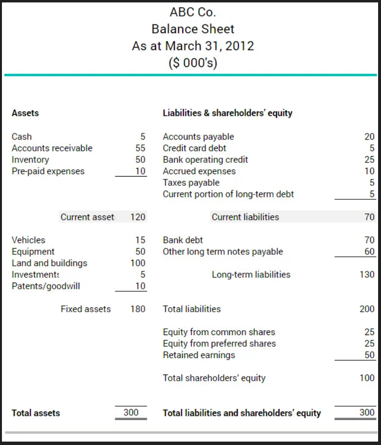

Insert a company's current assets and current liabilities from it's balance sheet and the tool will compute the current ratio. What is a company's current ratio or working capital ratio? The current ratio is a liquidity ration that gives a check on a company's ability to pay it's liabilities due in the short term without bringing in extra cash and sometimes it's called the workgin capital ratio. What is a good current ratio (working capital ratio)? A current raio of 1 or slightly higher means that a company can likely meet it's short term financial needs.some businesses may prefer an even higher current ratio, like 2 to 1 or 3 to 1 but a very high current ratio isnot always a best practice. However a higher current ratio means that a buiseness has enough cash to expand or make a big purchase. How to calculate the current ratio? Current assets are listed on the balance sheet from most liquid to least liquid, for example the cash is more liquid than inventory. In the following example a company X has $102,000 in current assets with $60,000 in current liabilities current ratio = current assets / current liabilities = $102,000 / $60,000 = 1.7 The business has a very good current ratio of 1.7 (change the picture with photoshop)
Why use the current ratio? Keeping trach of your current ratio will identify early signs of unsufficient cash flow to meet current liabilities. Calculating the current ratio each month or quarterly is considered as a good practice because this allows you to correct problems fast as they arise, doing the calculation annually may end up with you finding problems late and not being able to correct them. If you consistently calculate your current ratio this will give you a better sense of the liquidity you can devote to new opportunities